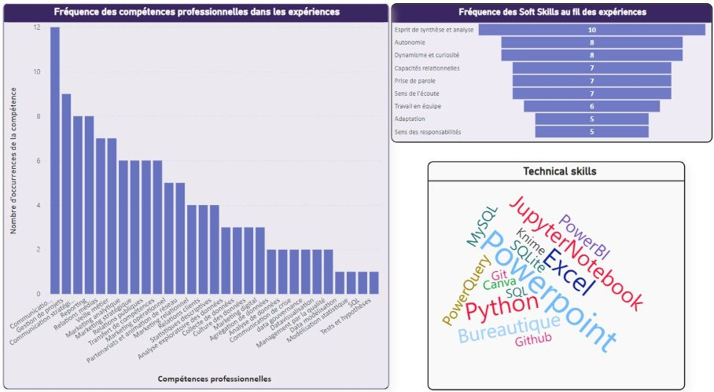

Je suis une professionnelle de l'analyse de données avec une solide expérience en communication et marketing dans le domaine de la santé publique.
Curieuse et polyvalente, j'ai une soif constante d'apprendre et de partager ma culture data. Mon enthousiaste et mon engagement s'appliquent à rendre les données compréhensibles, accessibles et donc utiles pour éclairer les décisions.
Je me suis investie professionnellement près de 20 ans à l’Établissement français du sang, le service public du sang, dans une mission de santé pleine de sens.
Attachée au travail en équipe, je crois à l’intelligence collective après en avoir fait l’expérience à de multiples reprises durant mes activités professionnelles.
Je m’inscris dans une approche responsable de la communication et du marketing où l’on interroge en continu la dimension sociale, écologique et durable de nos actions dans tous les domaines. Cette approche, je l’applique également au numérique et à la gestion des données.
Voici une visualisation synthétique de mes compétences.
